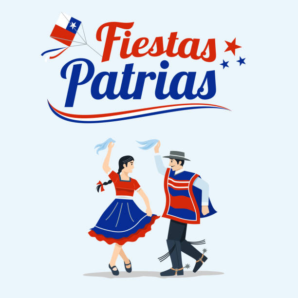
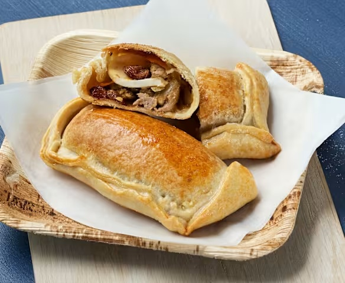

Música y cueca
Disfruta de música chilena, presentaciones folclóricas y una entretenida competencia de cueca.
Universidad Católica del Norte
Celebremos juntos nuestras Fiestas Patrias con cueca, juegos tradicionales, música en vivo y los mejores sabores chilenos.
La Fonda Ucenín Dieciochero es una actividad preparada para celebrar las Fiestas Patrias junto a estudiantes, profesores, funcionarios y sus familias.
Durante la jornada tendremos música chilena, presentaciones de cueca, juegos tradicionales y distintos espacios para compartir. También habrá puestos con comidas típicas como empanadas, anticuchos y dulces chilenos.
Conoce algunas de las actividades que tendremos durante la jornada.

Disfruta de música chilena, presentaciones folclóricas y una entretenida competencia de cueca.
Participa en juegos como tirar la cuerda, carrera en saco, emboque y otras actividades.

Prueba empanadas, anticuchos, sopaipillas y otros sabores tradicionales chilenos.